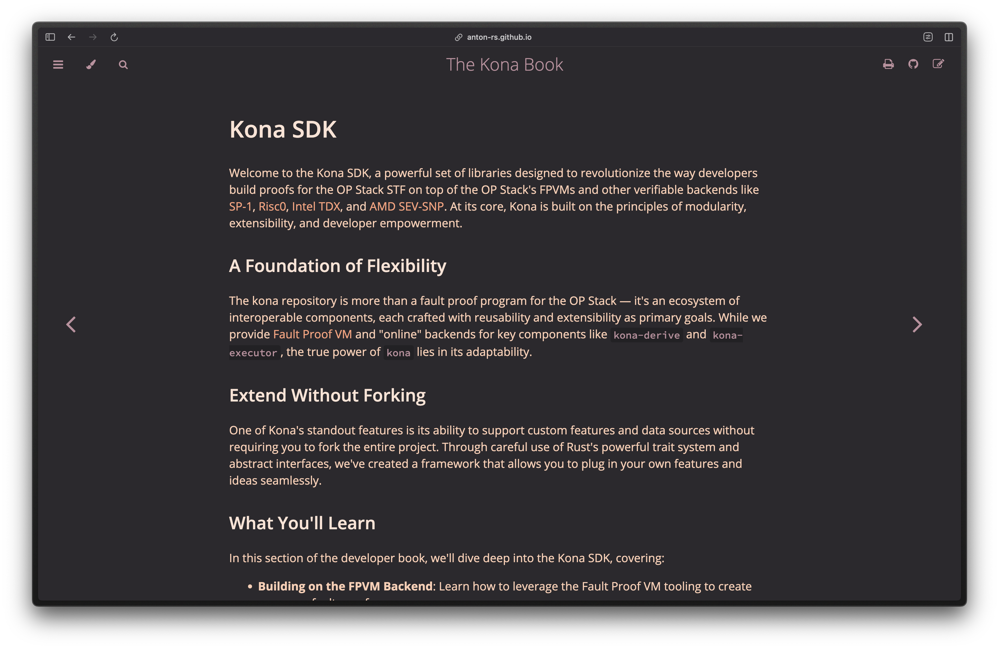
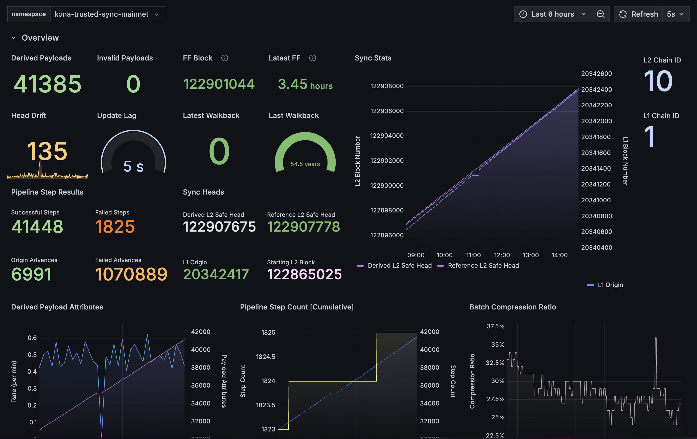
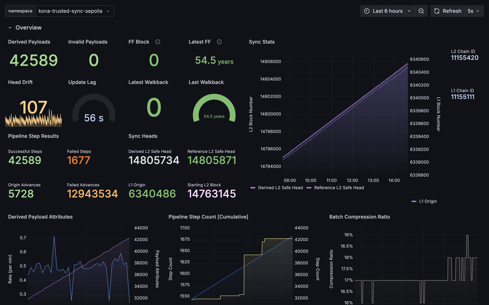
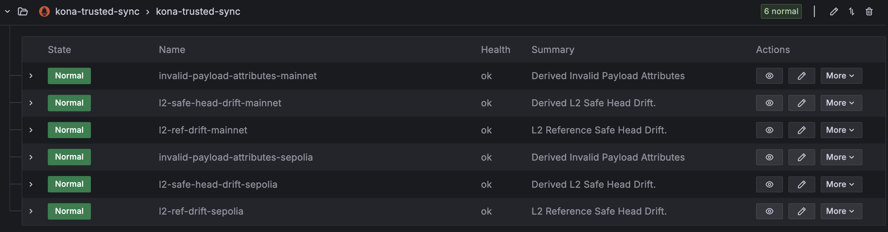

Week 0
Publish Date: September 27, 2024
Overview
This Newsletter is ported over from the Kona project, and is the first newsletter for the Alt Stack Team, a team dedicated to the Rust OP Stack at OP Labs.
Updates
The implementation of the Holocene hardfork is in full-swing, and @refcell is well into Holocene in kona-derive! For a working document of the fork implementation progress, see https://github.com/anton-rs/kona/issues/556.
Kona also received a docs refresh courtesy of @clabby over at anton-rs.github.io/kona. We’d love some feedback, specifically on the SDK section!
Blockers
We are blocked on completing the execution layer changes within kona with the revm changes pending. Currently Cody Wang from Coinbase is owning these, and we’ve reached out to see how we can help to keep progress moving.
We are also blocked on implementing action tests upstream in op-e2e until the upstream implementation has been completed. However, ours is not complete either, so this will manifest in a week or two.
Projects
Kona Project
✅ = DONE | 🚧 = WIP | 🛑 = NOT STARTED
🕜 Total Length of the Project ~= 23 weeks
Project Start Date: June 10, 2024
Project End Date: November 18, 2024
Phase 1: Asterisc ✅
{
"ProxyAdmin": "0x59cff637c814B045F154Be583a24179d3AF9F167",
"DisputeGameFactoryProxy": "0x69Fe8a33BaEC98698a4170E898B59aE3E0C651aD",
"AnchorStateRegistryProxy": "0xe2be2262b8F462B3D478Ff9bF7a51B8645772F49",
"DisputeGameFactory": "0x0d960BcFf756449Ef40a03254f5bAC4DB3896ac4",
"RISCV": "0xFde3de8B91B9cb7D5b92645ceA74B8B5a32092B5",
"AnchorStateRegistry": "0xc45320A1e9CDB1B52E332c1389BE330ab7ec17A5",
"FaultDisputeGame": "0x3f6F314093ff095494eB2C8268D810d50D212508"
"PreimageOracle": "0x627F825CBd48c4102d36f287be71f4234426b9e4",
"DelayedWETHProxy": "0xF3D833949133e4E4D3551343494b34079598EA5a",
}
Phase 2: Kona Derive ✅
| OP Mainnet Trusted Sync Grafana | OP Sepolia Trusted Sync Grafana |
|---|---|
|  |  |
Trusted Sync Alerts
